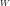
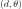
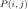
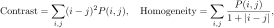
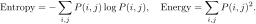

— how often level
— how often level Definition
First order (window

): local mean, variance, range, entropy of the local histogram.Co-occurrence matrix (Haralick): for an offset

,
= normalised count of pixel pairs with values and
and  at that offset (levels usually requantized to 16–64). Features:
at that offset (levels usually requantized to 16–64). Features:


Example
from skimage.feature import graycomatrix, graycoprops
q = (band / band.max() * 31).astype(np.uint8)
P = graycomatrix(q, distances=[1], angles=[0, np.pi/2], levels=32, normed=True)
contrast, homogeneity = graycoprops(P, "contrast"), graycoprops(P, "homogeneity")Intuition
Two fields with the same average colour, one orchard and one meadow, differ in how the colour changes from pixel to pixel: that is texture.
Pitfall
Texture depends on window size and resolution: too small a window is noisy, too large mixes classes at boundaries, producing a halo of wrong features along every edge.